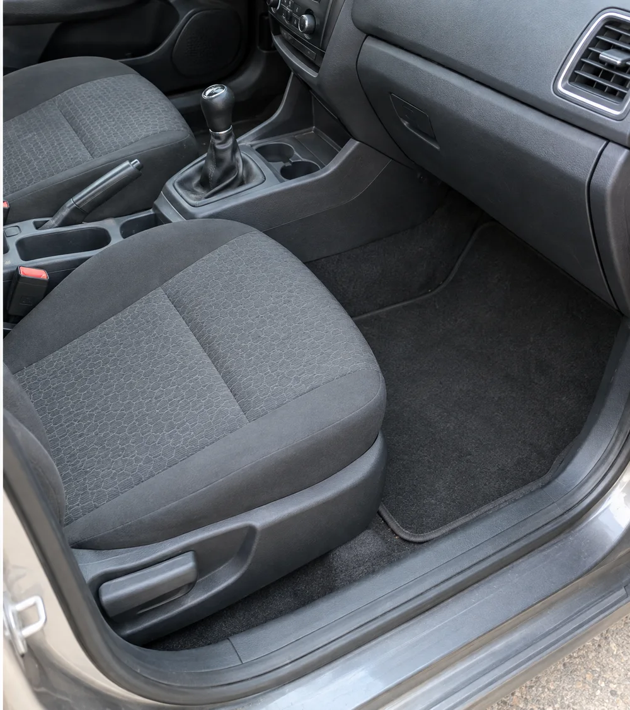
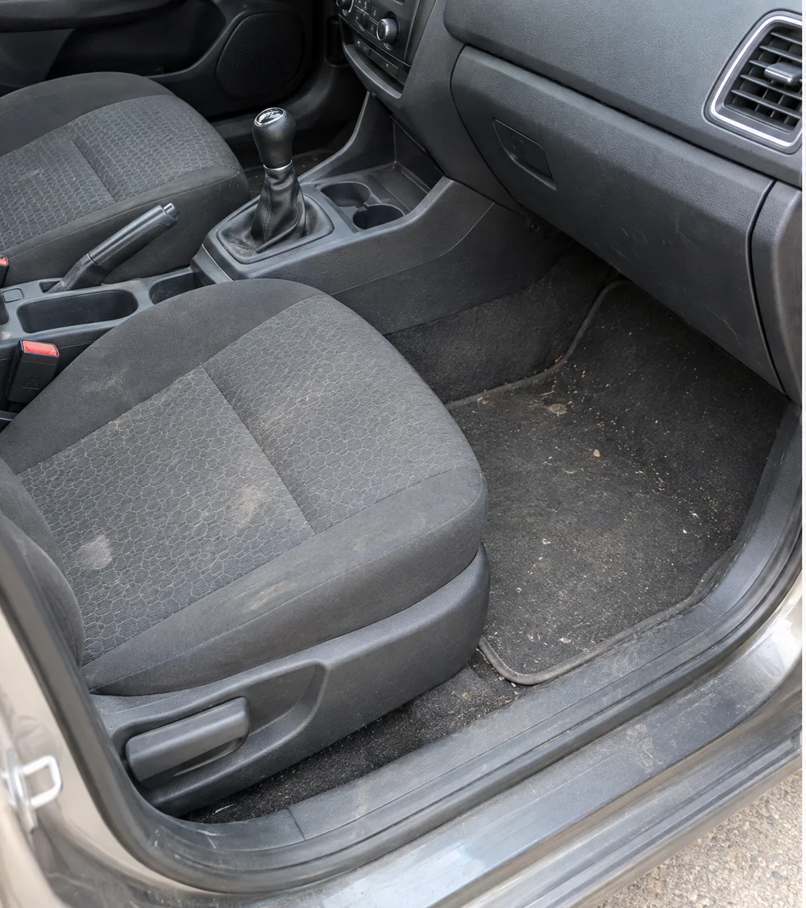
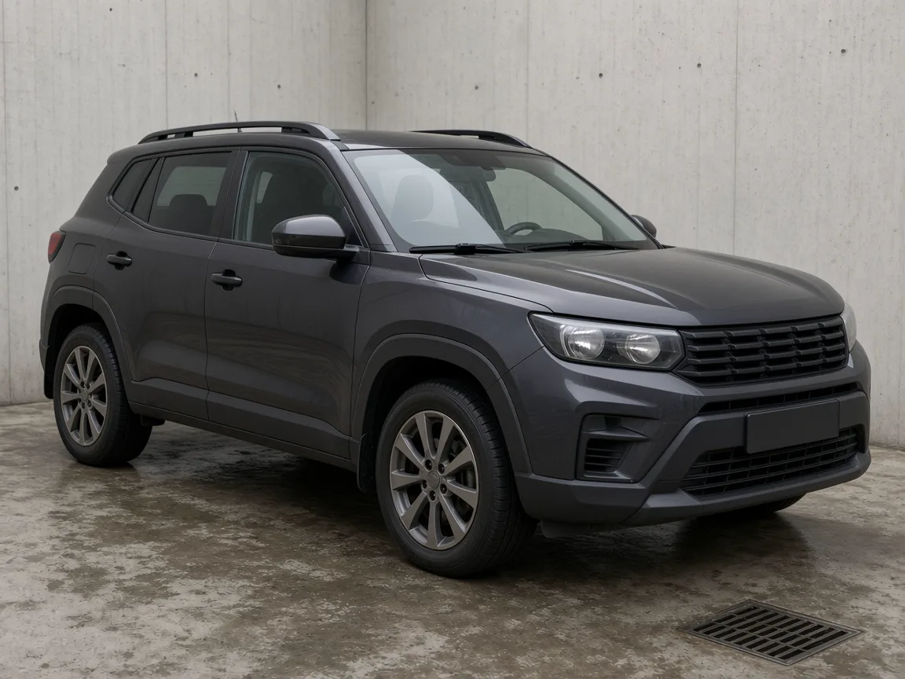
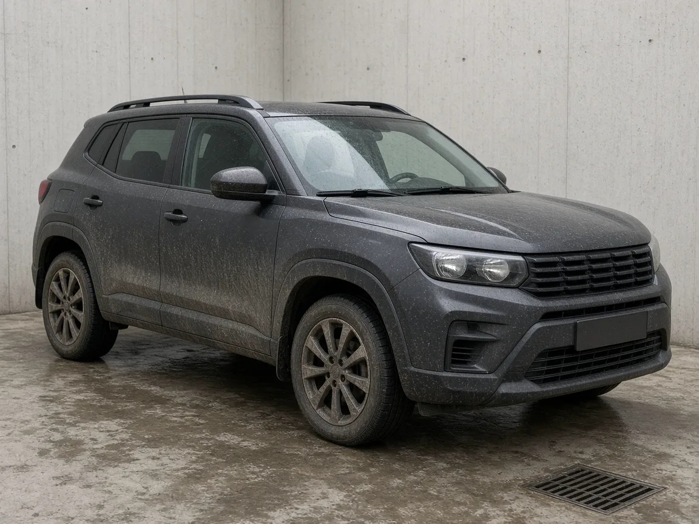

ESSENCIAL
Lavação completa
Limpeza interna e externa para a rotina do veículo.
Consultar o serviçoCOSTA E SILVA · JOINVILLE / SC
Motos, carros, SUVs e camionetes. Lavação do dia a dia e serviços sob agenda. Valores e horários pelo WhatsApp.
Rua Guilherme, 1533Costa e Silva · fundos da Peçaville
Veículos que atendemos.
O QUE PRIORIZAMOS
Na Santos Lavação, cada cliente recebe o mesmo cuidado: um resultado visível no veículo e um atendimento em que explicamos o que foi feito e o que depende de avaliação.
SERVIÇOS
Valores, condições e horário são confirmados no WhatsApp, conforme o modelo.
Limpeza interna e externa para a rotina do veículo.
Consultar o serviçoLavação completa com aplicação de cera. A indicação depende do estado da pintura.
Consultar o serviçoLimpeza somente da parte interna. O que entra no serviço é combinado no atendimento.
Consultar o serviçoLimpeza somente da parte externa. Informe o modelo do veículo.
Consultar o serviçoLimpeza do compartimento do motor, mediante avaliação do veículo.
Pedir uma avaliaçãoInforme o modelo e o que deseja cuidar. Indicamos o serviço adequado.
Quero uma orientaçãoLimpeza interna mais detalhada. O escopo depende da avaliação do veículo.
Consultar agendaLimpeza da parte inferior do veículo. O acesso é confirmado no agendamento.
Consultar agendaAvaliação da pintura para definir o polimento. Não há remoção total de riscos.
Consultar agendaPolimento da lente dos faróis, conforme o estado de cada peça.
Consultar agendaTratamento da superfície dos vidros. A disponibilidade está sob análise.
Consultar viabilidadeTratamento para revestimento em couro. A disponibilidade está sob análise.
Consultar viabilidadeRecuperação da aparência dos plásticos. A disponibilidade está sob análise.
Consultar viabilidadeServiços, valores e prazos são combinados conforme o veículo.
ANTES E DEPOIS
Registros de serviços prestados pela Santos Lavação. O resultado depende do estado do veículo e do serviço combinado.


Higienização interna · exemplo de serviço prestado pela Santos Lavação


Lavação externa completa · exemplo de serviço prestado pela Santos Lavação
ATENDIMENTO
A mensagem no WhatsApp orienta o atendimento. Ela não confirma a reserva.
Envie o modelo e diga se a limpeza é interna, externa, completa ou de um serviço específico.
Alinhamos o que está incluído, o valor e o prazo antes de marcar.
Serviços sob agenda dependem de horário disponível. A mensagem do site não reserva o atendimento.
LOCALIZAÇÃO
A Santos Lavação fica na Rua Guilherme, 1533, Costa e Silva, CEP 89218-500, Joinville/SC. O acesso é pelos fundos da Auto Peças Mecânica e Borracharia Peçaville.
Como chegarO mapa usa o endereço da Santos Lavação.
SANTOS LAVAÇÃO
Costa e Silva · Joinville · SC · CEP 89218-500
Consulte pelo WhatsApp.
O trajeto abre em Como chegar.
DÚVIDAS
Informações para organizar sua visita.
Rua Guilherme, nº 1533, Costa e Silva, CEP 89218-500, Joinville/SC. O box está localizado nos fundos da Peçaville.
Recomendamos agendar para organizar o atendimento. Serviços que não exigem agenda são atendidos por ordem de chegada quando não houver horário marcado. O agendamento tem prioridade. Higienização interna, lavação inferior, polimento automotivo e polimento de faróis são feitos somente com agendamento.
Atendemos motos, carros, SUVs e camionetes. Informe o modelo e o serviço para combinar o atendimento.
A parcial é só interna ou só externa. A completa reúne limpeza interna e externa. A completa com cera acrescenta a aplicação de cera. O escopo de cada serviço é confirmado no atendimento.
Valores e horários são informados pelo WhatsApp (47) 9 8885-4331.
Não. Manchas, riscos, odores e opacidade dependem do estado do veículo. A avaliação indica o que é possível fazer.
São exemplos de serviços prestados pela Santos Lavação. O resultado varia conforme o estado do veículo e o serviço combinado.
DILUIÇÃO
Informe o uso, a proporção do rótulo e o volume final.
No balde, 1:100 e 1:200 são as faixas mais citadas. 1:40 aparece em rótulos para sujeira mais pesada.
1 parte de produto + 100 de água
10 mlProduto
990 mlÁgua
Exato: 9,9 ml de produto e 990,1 ml de água.
O rótulo do produto prevalece. Estas faixas são referências frequentes de mercado e não substituem a orientação do fabricante. 1:10 significa 1 parte de produto e 10 de água. Não misture produtos diferentes. Pretinho e limpa-vidros prontos para uso não entram nesta conta.
CONTATO
Monte a mensagem e continue no WhatsApp. O site não armazena os dados e não confirma o agendamento.
(47) 9 8885-4331contato@santoslavacao.com.br